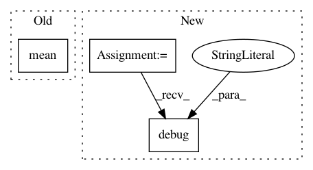

294c1eb610265c884175c2b8c125615c7d549cb3,tests/test_model_gum.py,TestCase,test_model_gum_prior,#TestCase#,29
Before Change
def test_model_gum_prior(self):
prior = self._model.prior_distribution(1000)
prior_mean = float(prior.mean())
correct_prior_mean = 1
print("\n prior_mean", prior_mean, "correct_prior_mean", correct_prior_mean)
self.assertAlmostEqual(prior_mean, correct_prior_mean, places=0)
After Change
prior = self._model.prior_distribution(5000)
prior_mean = float(prior.mean)
correct_prior_mean = 1
util.debug("prior_mean", "correct_prior_mean")
self.assertAlmostEqual(prior_mean, correct_prior_mean, places=0)
prior_stddev = float(prior.stddev)
correct_prior_stddev = math.sqrt(5)
util.debug("prior_stddev", "correct_prior_stddev")
In pattern: SUPERPATTERN
Frequency: 3
Non-data size: 3
Instances
Project Name: pyprob/pyprob
Commit Name: 294c1eb610265c884175c2b8c125615c7d549cb3
Time: 2018-02-10
Author: atilimgunes.baydin@gmail.com
File Name: tests/test_model_gum.py
Class Name: TestCase
Method Name: test_model_gum_prior
Project Name: pyprob/pyprob
Commit Name: 294c1eb610265c884175c2b8c125615c7d549cb3
Time: 2018-02-10
Author: atilimgunes.baydin@gmail.com
File Name: tests/test_model_gum.py
Class Name: TestCase
Method Name: test_model_gum_posterior_importance_sampling
Project Name: deepfakes/faceswap
Commit Name: 343392813338ae7b10b0a3bbb3b5a9a7da6e588d
Time: 2020-08-27
Author: 36920800+torzdf@users.noreply.github.com
File Name: lib/model/losses_plaid.py
Class Name: LossWrapper
Method Name: __call__